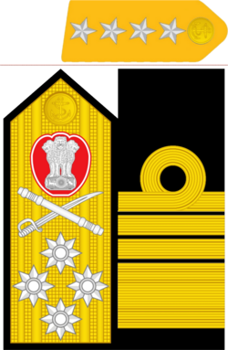
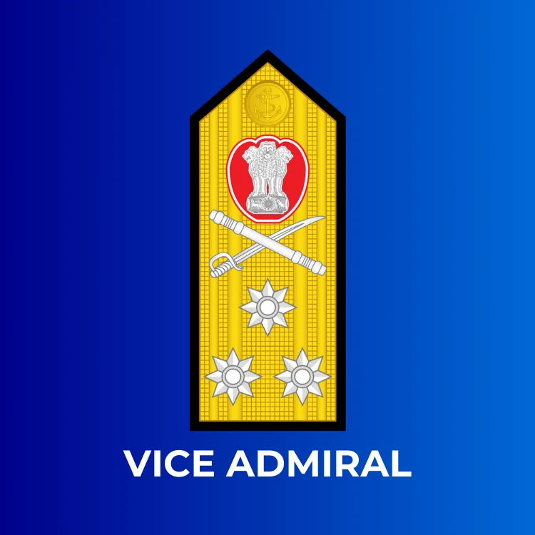
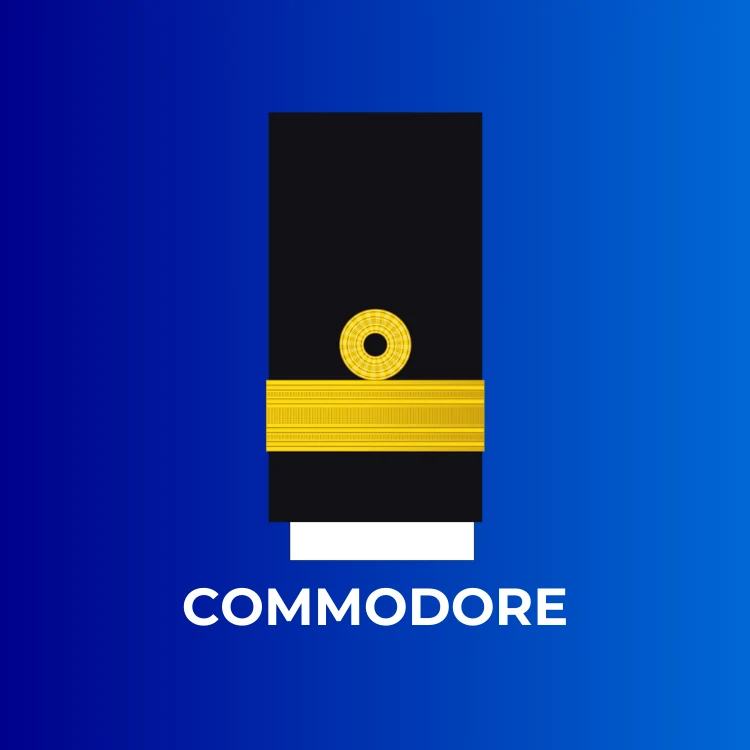
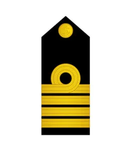
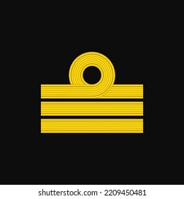
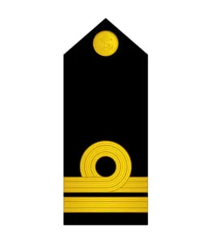
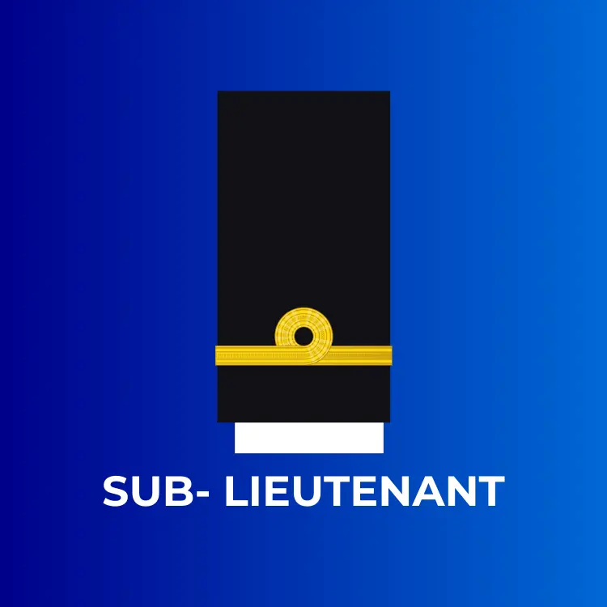

Admiral |
The highest active four-star rank, held exclusively by the chief of the Naval Staff (CNS). Responsible for its overall command, administrations, and operations, equivalent to an Army General. |
|---|---|
Vice Admiral |
A senior three-star flag officer, the second-highest active rank. Commanding major naval commands (like Western/Eastern) or holding crucial roles like Vice Chief of Naval Staff. |
Commodore |
The Commodore is a one-star rank in the Indian Navy, the lowest flag officer rank. It often commands flotillas, air stations, or holds senior HQ roles, signifying leadership over multiple ships or major shore establishments. |
Captain |
In the Indian Navy, a Captain is a senior officer (NATO (North Atlantic Treaty Organization) OF-5), commanding major warships (destroyers, frigates) or shore establishments. It is holding crucial command/staff roles above Commander and below Commodore, handling significant operational/administrative duties. |
Commander |
A Commander in the Indian Navy is a mid-level senior officer, commanding smaller vessels (like submarines, corvettes) or serving as Executive Officer on larger ships, responsible for mission execution, crew training, and tactical decisions. |
Lieutenant Commander
|
A Lieutenant Commander (Lt Cdr) in the Indian Navy is a mid-level commissioned officer, managing key departments (like navigation, engineering) on ships, serving as second-in-command (Executive Officer) on smaller vessels, or holding staff/technical roles. |
Lieutenant |
In the Indian Navy, a Lieutenant is a mid-level commissioned officer, typically leading small teams on ships in roles like navigation or engineering, following the entry-level Sub Lieutenant. |
Sub-Lieutenant |
A Sub Lieutenant is the entry-level commissioned officer rank in the Indian Navy, awarded after completing training at the Indian Naval Academy, serving as a junior leader, assistant to Lieutenants, learning technical systems, and beginning sea experience, typically through a Short Service Commission (SSC) for a set period. |